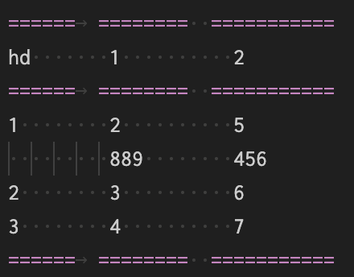
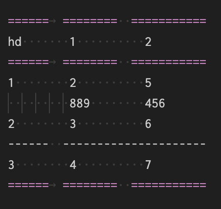

2023-03-01
表格
修改于: 2023-03-01支持的指令
table
简单表格, 例:
.. table:: 一个测试表格 :name: csv表格 ====== ======== ======== head 1 2 ====== ======== ======== 1 2 3 2 3 4 3 4 5 ====== ======== ========
注解
简单表格可以不需要 ..table, 直接使用符号画出来可以自动识别
csv-table
csv数据表格, 支持自定义分隔符, 例:
.. csv-table:: 一个测试表格 :name: 不知道有啥用 :header: head, 1, 2 1, 2, 3 2, 3, 4 3, 4, 5
list-table
列表格式表格:
.. list-table:: 一个测试表格
:name: test_list表格
:header-rows: 1
* - head
- 1
- 2
* - 1
- 2
- 3
* - 2
- 3
- 4
* - 3
- 4
- 5
符号表格
我这样称, 没注意官方怎么定义. 源码:
+-------+-------+-------+ | head1 | head2 | head3 | +=======+=======+=======+ | 1 | 2 | 3 | +-------+-------+-------+ | 4 | 5 | 6 | +-------+-------+-------+ | 7 | 8 | 9 | +-------+-------+-------+
效果基本都是一样的:
| head1 | head2 | head3 |
|---|---|---|
| 1 | 2 | 3 |
| 2 | 3 | 4 |
| 3 | 4 | 5 |
注解
这种符号表格, 只能用空格而不是tab, 否则会导致识别不正常(截止于Sphinx5.3, 后续没试过)
另外符号表格画起来好麻烦
表格折行打印
有时候文字太长, 需要折行视为同一行
简单表格只能实现第二列后的折行
合并也支持
效果:
| hd | 1 | 2 |
|---|---|---|
| 1 | 2 889 | 5 456 |
| 2 | 3 | 6 |
| 3 | 4 | 7 |
源码

也支持表格合并
合并表格体第二行:
| hd | 1 | 2 |
|---|---|---|
| 1 | 2 889 | 5 456 |
| 2 | 3 6 | |
| 3 | 4 | 7 |
源码:

此处参考: 表格学习
符号表格可以实现所有列的折行
| head1 | head2 | head3 |
|---|---|---|
| 1 4 | 2 24 | 3 |
| 34 | ||
| 2 | 3 | 4 |
| 3 | 4 | 5 |